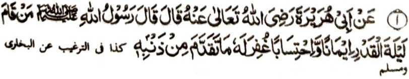

‘Hadith 1

Miyakathitayan ko Abu Hurairah (Radhiallaho Anho) a pitharo iyan a pitharo o Rasulollah (Sallallaho Alaihi Wasallam), “Sa tao a itindeg Iyan [so Sambayang] ko Lailatul Qadr a paratiyaya niyan ago singanin niyan [ko balas o Allah (Subhaanaho Wa Ta'ala)] na rila-an rekaniyan so miya-ona a manga dosa niyan. ”
OSAYAN
Si-i sangkanan a miya-aloy a Hadith, na so [katharo a] 'Itindeg’ na aya mitotoro iyan na so Sambayang, ogaid na khapakay a mirakhes son so manga ped a simba [Ibaadah], ibarat o Dhikr, so Tilawat, go so manga ped iyan. So katharo a “.... Singanin niyan ko balas...” na aya ma-ana niyan na so niat o tao na paliyogat a Ikhlas go so tao na tindeg sa hadapan o Allah (Subhaanaho Wa Ta’ala) sa tarotop a kapangalimbaba-an ago tolabos. Pitharo o Khattabi (Rahmatullahi ‘Alaihi), a aya ma-ana niyan na paliyogat ko tao so katarotop o paratiyaya niyan sa so langowan o Amaal na palaya mbalasan go di niyan phikira a giyangka-iya a manga ‘Ibaadah na mapened, o di na pananggila-i o tao o ba katago-i sa kazasangka [ko o ba baden di mitoman so diyandi a balas]. Kena ba di katawi a anda den-i kiporo-on o tao ko panamar iyan go makazinganin sa mala a balas, sa misasareta-on a tatangkeden niyan a khakowa niyan [angkoto a balas], na tanto a phakalebod so panamar a nggolalan ko pangeni sa kira-ot sangkoto a antap. Giya-i sabap a so siran a miniporo so paratiyaya iran sa pangilay-layan o Allah (Subhaanaho Wa Ta’ala) na tanto kiran a malebod so katatap iran ko ‘Ibaadah’. Aya thanodan tano na igira inaloy o Hadith pantag ko kakharila-i ko miyaona a manga dosa, na so manga ‘ulama na miyatharo ’ran a giyangka-iya rila (sa lagid o kiya-aloy niyan sangka-iya a Hadith ago so manga ped a lagid iyan] na aya mitotoro iyan na so bo so manga roroni a dosa. sabap sa si-i ko kiyabaloy niyan sa Qur’an, na so manga ala a dosa na aya bo a kakharila-i ron na nggolalan sa tolabos a kathaobat, a mirakhes son so kazamaya sa di den pembabalinganan. Giyoto-i sabap a igira inaloy sa Hadith so kaperila-i ko manga dosa na aya pana-awil o manga Ulama na giyoto bo so manga roroni a dosa. So miyawapat a ama aken [ikalimo sekaniyan o Allah (Subhaanaho Wa Ta'ala) go sindawan niyan so darepa iyan] na lalayon niyan gi-i tharo-on a dowa a sabap a da ka-aloy o maito a dosa si-i ko manga Hadith. Paganay ron, na so titho a Muslim na sekaniyan so tao a da a khalamba rekaniyan a mala a dosa sabap sa anda den-i kapakasogok iyan sa mala a dosa, na di sekaniyan den thangka taman sa di niyan tolabos a mathaobat ko Kadenan niyan. Ika dowa sabap na si-i ko soled angkanan a mala ago babarakaten a manga kagagawi-i ago manga kadadaondao, na igira so titho a Muslim na tominideg ko hadapan o Kadenan niyan mokit ko Sambayang ago kazoa-soat, a mai-inam iyan so kapakaparoli sa balas, na si-i ko ginawa niyan na madadalemon so tanto a kimboboko-on niyan ko miyaona a manga dosa niyan, a rakhes a manini-at iyan a di niyan den pembabalinganan angkoto, sa giyoto-i pithamanan a sarat o kathaobat. Aya ma-ana ini na sangkoto a manga kadadaondao ago manga kagagawi-i, na so barasimba na mata-an a gi-i niyan thaobaten so manga ala a dosa niyan a miyasogok iyan. (Sa aya bo a miyalamba rekaniyan na so manga i-ito a dosa). Aya taralebi na igira a somiyagad so kagagawi-i lagid o Lailatul Qadr, na aya ona-i o tao na so kathaobat a nggolalan sa katharo, go so poso iyan na mipepeno-on so tanto a kapakazisinganin sa rila, ka oba kalo-kalo na so Allah (Subhaanaho Wa Ta’ala) sabap ko ada a tamana o Ma-ap Iyan na rila-an Niyan so langon o dosa. Go igira pinggola-ola niyo angka-i na phagepeda ko niyo ko manga pangeni niyo.